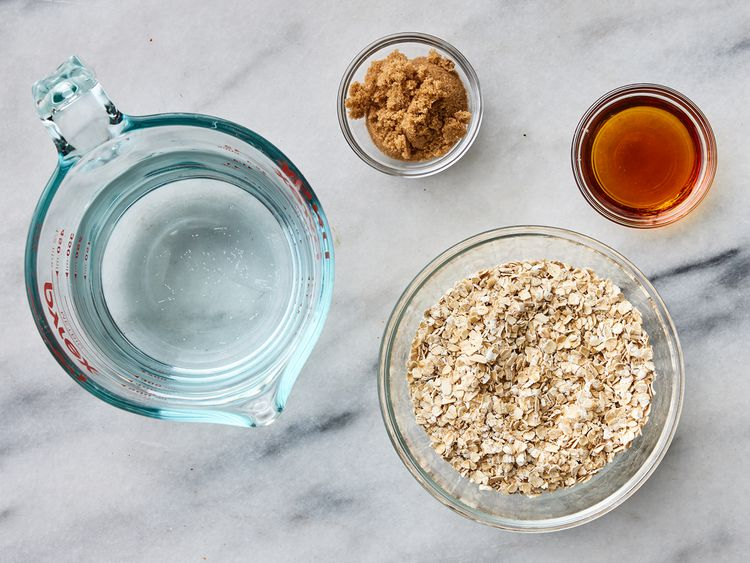
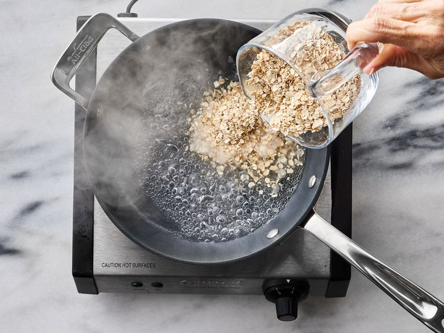
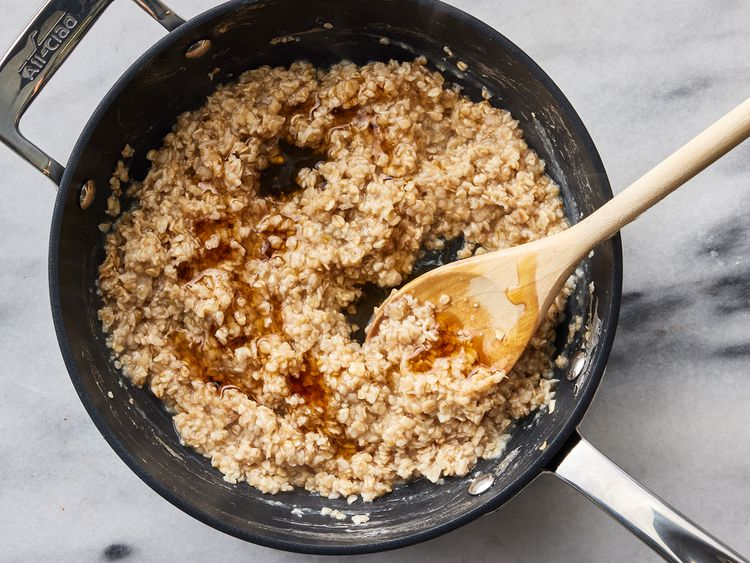
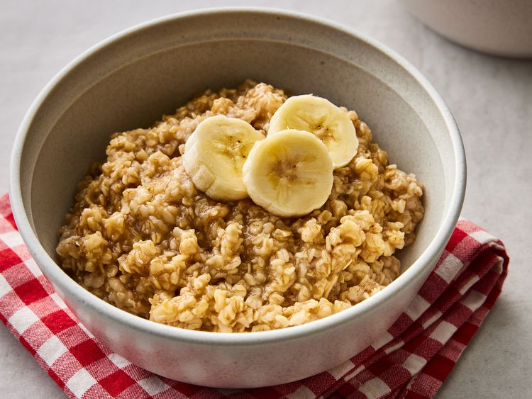

Maple and brown sugar oatmeal is super easy to make. I was tired of buying the packages, so I decided to experiment and this is it!
Gather all ingredients.

Bring water to a boil in a small pot. Add oats and cook, stirring, for 1 minute.

Remove from heat and stir in brown sugar and maple syrup. Let sit until desired thickness is reached, 2 to 3 minutes.

Enjoy!
